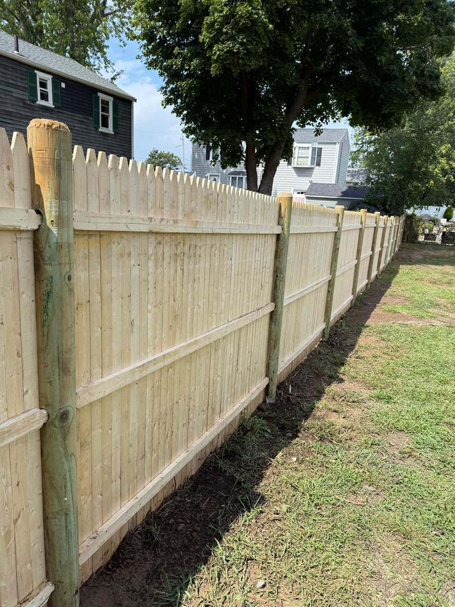

Our Work
Quality You Can See.
Work That Speaks for Itself.
Landscaping, fencing, hardscaping and snow plowing for properties in Rockland, MA and surrounding areas.
Project Gallery
Browse Our Work.
Select a category, then click any photo to view it larger.
No projects in this category yet — try another filter.
Year-Round
A Different Job Every Season.
Spring
Refresh and improve your outdoor spaces.
Summer
Keep your property clean, attractive, and well maintained.
Fall
Prepare your property for the changing season.
Winter
Reliable snow plowing when winter weather arrives.

Want Results Like These?
Let's Get Started.
Tell us about your project and let's find the right solution for your property.
Serving Rockland, MA & surrounding areas · Monday – Saturday, 7:00 AM – 6:00 PM